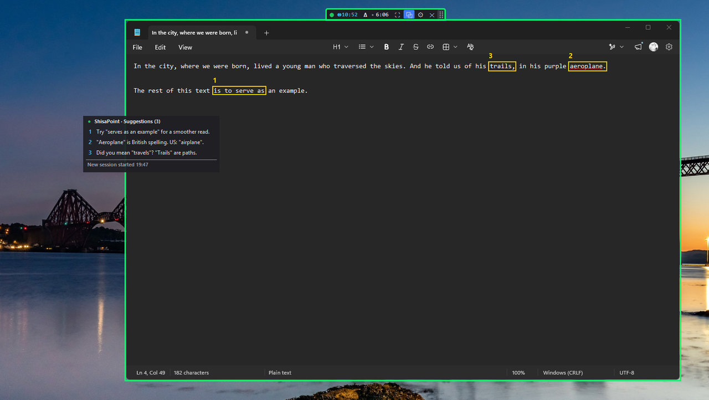
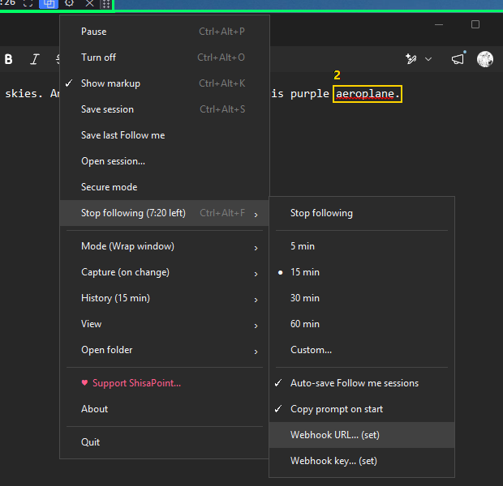
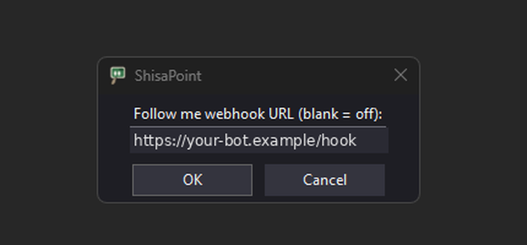

Lens
A see-through frame you can move and resize anywhere on your screen. Clicks pass right through it, and it saves a snapshot of what’s inside it for your bot.
Let your bot see what you see. Frame part of your screen, and your bot follows along with snapshots and points to what matters.
The name comes from shisa kanko, the Japanese “point and call” safety habit where workers point at something and say it out loud so nothing gets missed. 指差 (shisa) means finger-pointing, and 示唆 (shisa) also means suggestion — which fits an app that points at things and suggests.

A see-through frame you can move and resize anywhere on your screen. Clicks pass right through it, and it saves a snapshot of what’s inside it for your bot.
Start a session and your bot follows along as you work. Sessions run 15 minutes by default, with a countdown on the tab.
Your bot can draw numbered boxes on your screen around the exact word or spot it means, with matching notes in the suggestion panel, so you don’t have to hunt for what it’s talking about. You can recolor the boxes, and saved sessions keep the boxes and notes with the frames.
Give your bot the Follow me webhook link from Follow me ▸ Webhook URL… in the app, once. That tells it when you start and stop a session.
Drag and resize the see-through frame over what you want your bot to see. Clicks pass right through it.
Press Ctrl+Alt+F or use the menu (15 minutes by default, with a countdown on the tab). Snapshots run every 5 seconds by default, or only when the screen changes. Suggestions show up in the panel with boxes around what they mean. Stop anytime by clicking the tab or pressing Ctrl+Alt+F again.


Share sketches and art in progress so your bot gets the shape and style without endless back-and-forth text.
Get typing and writing suggestions as you go.
Frame an error or a confusing settings screen, and your bot shows exactly which button to click next.
Learning Blender, Excel, a video editor or a game? Get step-by-step coaching, like a tutor looking over your shoulder.
On a form, spreadsheet, contract or checkout page, it flags a wrong date, a mismatched total or a missed field. No one likes mistakes.
Your mileage may vary — assistants can be a bit sluggish at first, almost in a human way. To help it pick up sooner:
Your security matters, so ShisaPoint keeps it simple:
%USERPROFILE%\ShisaPoint\snapshots, and history is trimmed after 15 minutes by default.Yes. ShisaPoint is free, and there’s a tip jar if you’d like to support it.
Windows 10 and 11.
Yes, for the suggestions. ShisaPoint itself only captures the frame and reads the text locally. You need an AI assistant that can read files on your PC and receive a webhook, such as Grok Bot. Without one it still works as a timed region snapshot tool.
ShisaPoint itself doesn’t upload anything. Snapshots and text reading stay in a folder on your PC (%USERPROFILE%\ShisaPoint\snapshots), history is trimmed (15 minutes by default), and the Follow me start signal carries no screen content. Your bot reads the files when you start a session, so what happens next depends on that bot. Secure mode encrypts snapshots to your Windows account and wipes them when you quit, and the app pauses while password manager or banking windows are in front.
Every 5 seconds by default, or only when the screen changes. You can pick anywhere from 1 to 30 seconds, or set your own.
Click the tab or press Ctrl+Alt+F. Press Ctrl+Alt+P to pause capture.
You do. What you do with your bot and ShisaPoint is yours alone. How AI fits into everyday life is up for debate, but the important thing is to use the tools we have today responsibly.
I’m not trying to make a profit on this app. What I do want is an honest app that can be a springboard for others. I want to see good tools that don’t have a price tag (at least not an unjustified one) that would hinder healthy growth in this space. Keeping it running doesn’t cost much, but it isn’t free. I plan to keep it going as long as people use it and the costs stay manageable. That’s the honest truth.
Download ShisaPoint for Windows. It’s free, and it runs on Windows 10 and 11.
The download is unsigned for now, so Windows SmartScreen may say it’s unrecognized. If you trust the file, choose More info, then Run anyway. Put ShisaPoint.exe in a folder of its own.
Questions, bugs, or suggestions: support@shisapoint.com
Like it? Leave a tip: ko-fi.com/shisapoint
I wanted my bot to help with a future project that uses a sketch and art program, so it could get the shape language and style of a product with less back-and-forth text to correct it. I hoped another program on the market already allowed that kind of hands-on interaction, but I couldn’t find one. So we made one. I even used it to help tweak the app icon!
My first goal was to show sketches to my bot. It quickly proved useful for typing and writing suggestions too. Depending on your bot and focus, there may be even more ways to use ShisaPoint. For those of us who watched sci-fi growing up and seeing the imaginary framework of AI/Digital assistants, we are on the doorstep of that age.
AI will be a part of life going forward. It will be those who use it effectively and correctly who manage its success and reception.